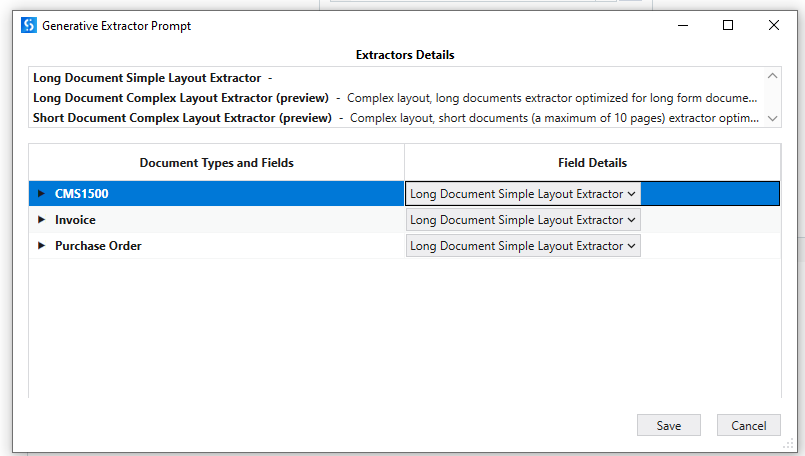

Part 1 : Generative Classifier and Extractor
🎯 Learning Objectives
- Understand what generative AI means in the context of UiPath Document Understanding
- Configure and use the Generative Classifier for description-driven document classification
- Configure and use the Generative Extractor activity with prompt-based field extraction
- Apply good practices for writing clear, accurate extraction prompts
In UiPath Document Understanding, generative refers to the use of Large Language Models (LLMs) and Generative AI (like GPT-4) to process, classify, and extract data from documents. Instead of rigid templates or extensive training, it uses plain-language prompts to understand unstructured information — making it possible to handle a wide variety of document types with minimal setup.
Generative Classifier
The Generative Classifier is a classification tool that leverages generative AI to categorize documents using description-driven document type definitions. Instead of training on labeled examples, it classifies documents based on natural language descriptions you provide for each document type.
How to Configure the Generative Classifier
- Insert a Classify Document Scope activity into your workflow
- Place the Generative Classifier activity within that scope
- Click Manage Prompts and enter clear natural language descriptions for each document type
When to Use the Generative Classifier
- Documents are unstructured with varied content
- You can describe the document types in natural language in a way that allows generative AI to distinguish between them
Generative Extractor Activity
The Generative Extractor activity enables data extraction from documents using generative machine learning models through UiPath's Document Understanding platform. It uses a prompt-based wizard where you define field names and descriptions to guide the model.
Key Capabilities
- Extracts document data using generative models
- Supports multiple document types with customizable extractor types
- Three extractor types available:
- Long Document Simple Layout Extractor — for long documents with a straightforward layout
- Long Document Complex Layout Extractor (preview) — optimized for long-form documents with complex layouts
- Short Document Complex Layout Extractor (preview) — for short documents with complex layouts (maximum 10 pages)
- Field descriptions directly influence model extraction accuracy (max 1,000 characters per description)
- Compatible with Windows Legacy and Windows platforms

Generative Extractor Prompt — Extractor Details and Document Types configuration in UiPath Studio
Generative Extractor — Good Practices
Key Limits to Keep in Mind
- Maximum 50 prompts per extractor
- Extraction result (Completion) has a maximum word limit of 700 words
| Practice | Guidance |
|---|---|
| Use Precise Language | Use clear, unambiguous phrasing. Imagine multiple people answering your question — if responses would differ significantly, refine the language. |
| Standardize Output Format | Specify the desired output structure explicitly — e.g. "return date in yyyy-mm-dd format" or "return numbers in ##,###.## format". |
| List Expected Options | When answers are limited to known choices, list them explicitly — e.g. "Possible answers: Married, Unmarried, Separated, Divorced, Widowed, Other." |
| Use a Step-by-Step Approach | Break complex queries into sequential steps. Programming-style formatting (JSON or XML) improves accuracy by leveraging the model's code-interpretation capabilities. |
| Avoid Arithmetic & Logic Operations | Do not ask the extractor to perform sums, multiplication, subtraction, or comparisons — handle these in your workflow with standard activities instead. |
| Avoid Complex Table Extraction | The Generative Extractor struggles with two-dimensional table data. Use the IXP capability for complex table extraction. |
| Assess Confidence Carefully | Rather than relying solely on confidence scores, pose the same question multiple ways. Convergent answers indicate reliability; divergent responses suggest human review is needed. |